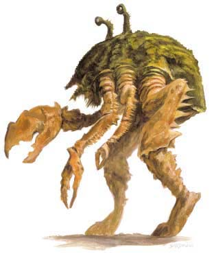

中型人形怪物（水栖）

| 生命骰： | 3d8+6（19 HP） |
| 先攻： | +0 |
| 速度： | 30英尺，游泳20英尺 |
| 防御等级： | 16（+6天生），接触10，措手不及16 |
| 基本攻击／擒抱： | +3/+5 |
| 攻击： | 爪击 +5 近战 |
| 全力攻击： | 2次爪击 +5 近战 |
| 伤害： | 爪击 1d6+2 |
| 面宽／触及： | 5英尺/5英尺 |
| 特殊攻击： | ― |
| 特殊能力： | 黑暗视觉60英尺，有限再生 |
| 豁免： | 强韧+5，反射+3，意志+1 |
| 属性： | 力14，敏11，体14，智9，感11，魅8 |
| 技能： | 躲藏+6，聆听+5，侦查+5，游泳+10 |
| 专长： | 警觉，强力攻击 |
| 地域： | 温带及暖水域 |
| 组织： | 单独或部落（2�C12） |
| 挑战等级： | 1 |
| 宝物： | 无硬币，标准货物，50%概率物品 |
| 阵营： | 通常绝对中立 |
| 进化： | 4�C5 HD（中型）；6�C9 HD（大型） |
| 等级调整： | +4 |
尤里安是一种奇异的甲壳类与类人生物的混合体，常见于海岸洞穴。它们通常不具侵略性，但在食物短缺时会对其他生物发起袭击。
尤里安直立行走，呈双足姿态，但共有六肢。中间的两肢末端长有小钳，用于精细操作；上肢则更粗壮，终结于沉重的巨爪，用作主要武器。背部覆盖着厚重的甲壳，腹部与四肢则由较为柔韧的甲片保护。头顶生出两根眼柄，在复杂的口器上方来回摆动。其颜色从鲜红、橙色到暗淡的红褐、绿色或黑色不等。大多数尤里安身高在6至7英尺之间，但随着年纪增长，它们会持续生长，古老个体可高达10英尺以上。
尤里安是简单的渔猎采集者，主要以腐肉和水生植物为食。它们的工艺虽然简陋，但常常颇具美感，包括海藻编织、浮木雕刻以及贝壳建造。
尤里安会说水族语（Aquan），可在空气与水下呼吸。
尤里安依靠强大的巨爪作战。某些部落的雄性个体拥有一只特别巨大的钳爪，可造成 1d8 + 力量修正 的伤害。
有限再生（Ex）：尤里安能够再生失去的身体部位，作为其自然愈合能力的一部分。如果失去肢体或眼柄，该部位会在伤势痊愈时一同再生。
技能：尤里安在躲藏检定上有 +4 种族加值，在任何游泳检定中若为执行特殊动作或避免危险则有 +8 种族加值，并且即使在分心或受威胁时也能随意取10。
尤里安的擅长职业是野蛮人。施法者通常为导师（Adept）或德鲁伊。少数的尤里安牧师崇拜祖灵，并可选择医疗、幸运、保护、水四个领域。
尤里安玩家角色的有效角色等级（ECL） = 职业等级 +4。
例如，一名1级尤里安野蛮人算作ECL 5，相当于5级角色。
（译者注：这里设计师没有完全使用3rECL规则进行解读，导致出现了一些问题，忽略就行）